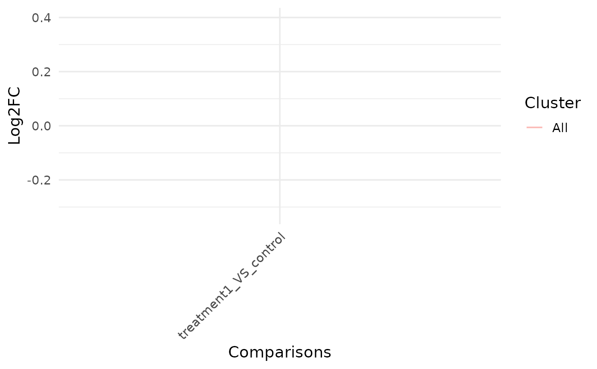

Fold-change line plot across comparisons
Source:R/bioccheck_roxygen_fixes.R, R/viz_related.R
get_foldchange_lineplot.RdPlots log2 fold-change trajectories for selected genes across multiple comparisons, optionally clustering genes.
Arguments
- x
A
VISTAobject containing differential expression results.- sample_comparisons
Character vector of comparison names to include.
- genes
Optional character vector of gene identifiers to plot. Defaults to all genes.
- km
Optional integer specifying the number of k-means clusters to compute;
NULLdisables clustering.- facet_by
Faceting mode:
"none"(default) or"cluster"when k-means clustering is requested.- alpha
Numeric alpha applied to individual gene lines.
- show_summary
Logical; overlay a summary line per cluster when
TRUE.- summary_color
Color used for the summary line. When
NULL, uses the first comparison color (if stored) for consistency across plots.- summary_linewidth
Numeric line width for the summary line.
- summary_fun
Character string selecting
"median"or"mean"for the summary statistic.
Examples
v <- example_vista()
comp <- names(comparisons(v))[1]
genes <- head(as.character(comparisons(v)[[comp]]$gene_id), 5)
p <- get_foldchange_lineplot(v, sample_comparison = comp, genes = genes)
print(p)
#> $plot
#> `geom_line()`: Each group consists of only one observation.
#> ℹ Do you need to adjust the group aesthetic?
#> `geom_line()`: Each group consists of only one observation.
#> ℹ Do you need to adjust the group aesthetic?

#>
#> $clustered_data
#> gene_id cluster
#> ENSG00000000003 ENSG00000000003 All
#> ENSG00000000419 ENSG00000000419 All
#> ENSG00000000457 ENSG00000000457 All
#> ENSG00000000460 ENSG00000000460 All
#> ENSG00000000971 ENSG00000000971 All
#>